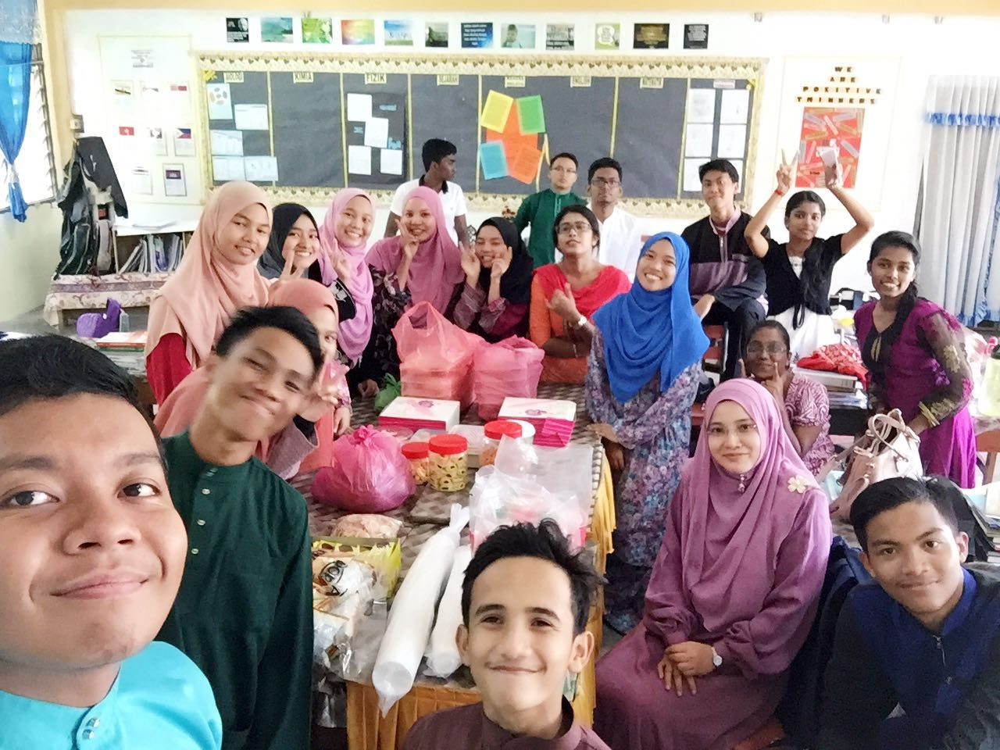
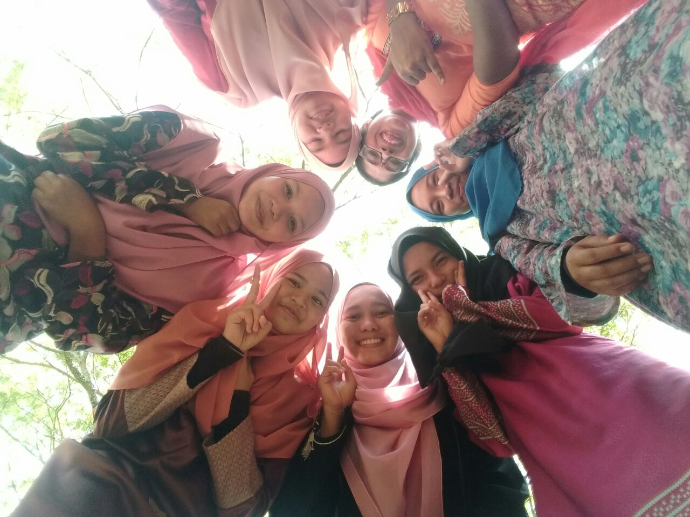
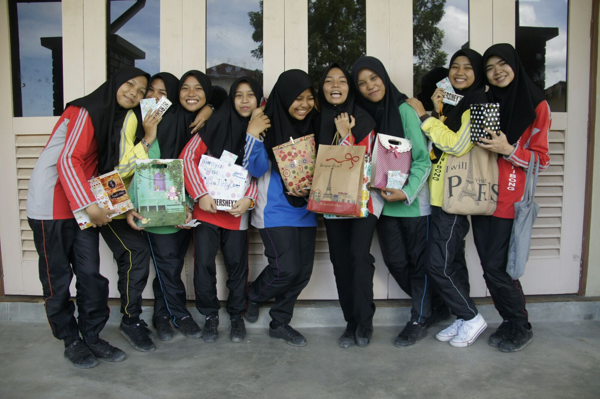
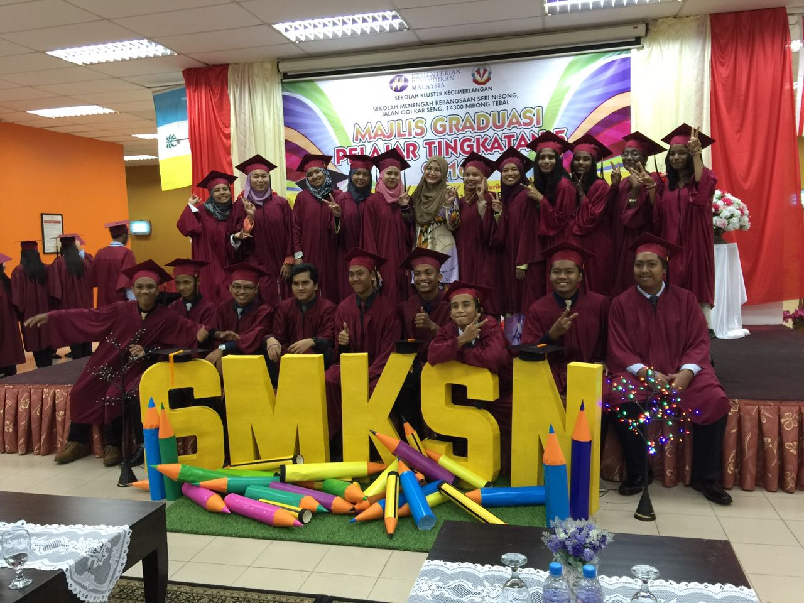
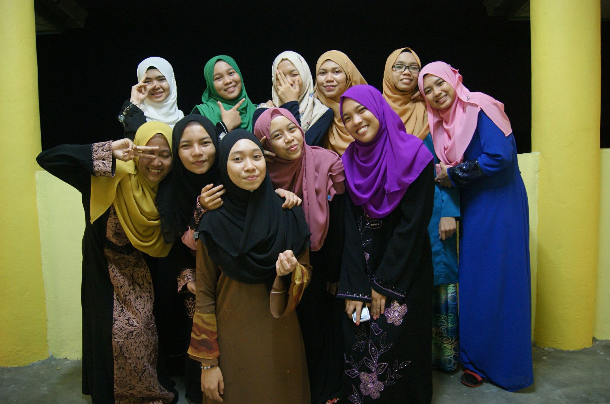
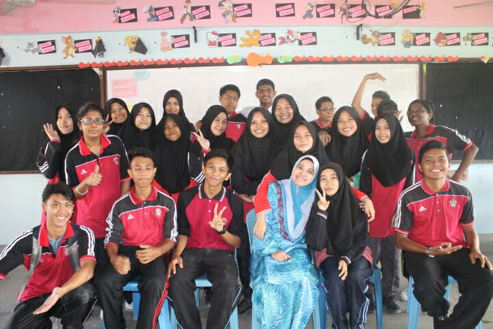
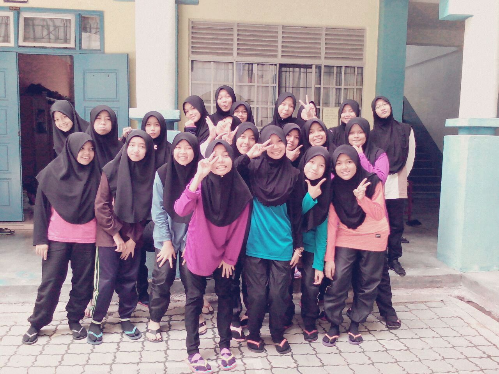

Kolej Poly-Tech MARA Alor Setar
2017 until 2020
Diploma in Office Management and Technology in Collaboration with UiTM
Studying at there give me a lot of new memories that I'll keep cherished
Being one of the best student at there give me a lot of experience
I also be part of the best club at there which is Office Management Student Association (OMSA)
I've being pointed as the President of that club for 2019/2020 session
Here are some memories that I've created at there
Secondary School
Sekolah Menengah Kebangsaan Seri Nibong
2012 until 2016
My first ever experience being far from my family
Stay at hostel from the first year until my final year at that school
Highschool give me a lot of unforgetable memories and a friendship
There's a saying that say "highschool friends is someone that cant be replaced"
At there I know who is my enemy and my friends
Living in hostel had made me an independent girl
Some memories







Primary School
Sekolah Kebangsaan Sungai Acheh
2005 until 2011
My first place where I learn to read, count and write
Be experiencing how to make friends
First place where i used to sing in front of many people
Learning about life
A childhood memory that I will never forget